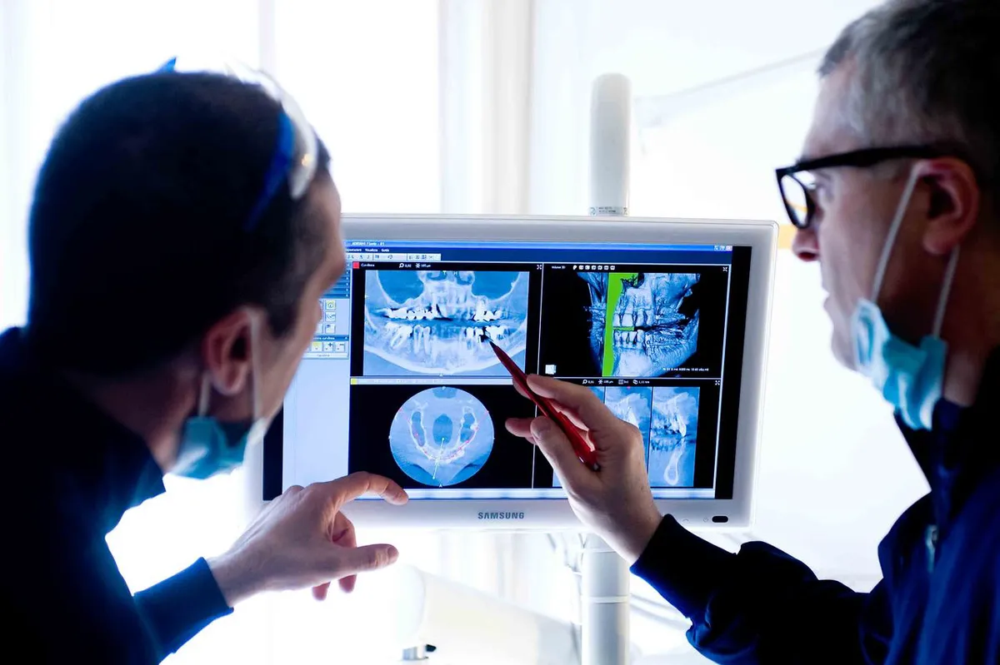
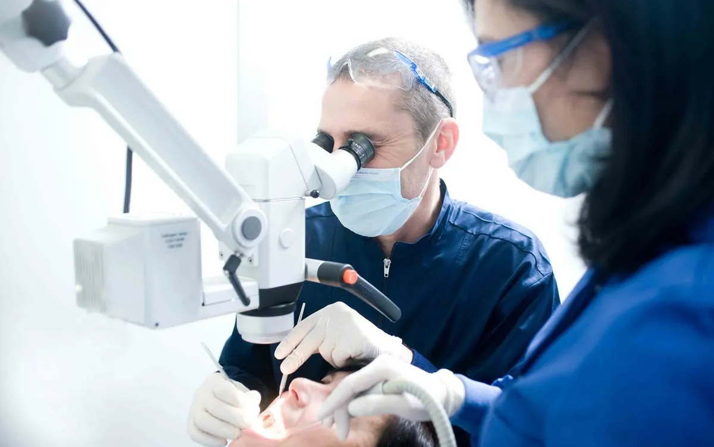
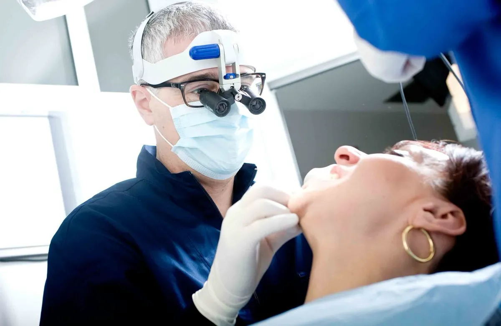

·
Medicina Estetica
Filler viso a Milano: guida completa ai trattamenti
Zigomi, rughe naso-labiali, occhiaie e ovale del viso: tutto sui filler con acido ialuronico.
Leggi di piùIl Centro Medico Minetti è uno studio odontoiatrico attivo a Milano dal 1964, che nel tempo ha ampliato la propria offerta con altri servizi specialistici e, più recentemente, con trattamenti di medicina estetica. Uniamo esperienza, professionalità e tecnologie moderne per prenderci cura della salute e del benessere dei nostri pazienti.



Un centro polispecialistico per prenderti cura di te.
Il nostro studio dentistico a Milano si occupa di prevenzione, cura e riabilitazione del sorriso: dalla carie all'implantologia, dalla chirurgia orale all'ortodonzia.
Scopri di piùOffriamo trattamenti di medicina estetica a Milano, tra cui filler, botox e biostimolazione, eseguiti da medici qualificati. I nostri interventi sono personalizzati per valorizzare il viso in modo naturale e sicuro.
Scopri di piùTerapia manuale per il riequilibrio del corpo, con tecniche mirate per la risoluzione del dolore.
Scopri di piùValutazione e trattamento delle alterazioni anatomiche e funzionali del piede e della caviglia.
Scopri di piùDiagnosi, valutazione prognostica e trattamento delle malattie del sangue, incluso il monitoraggio della terapia anticoagulante.
Scopri di piùGuida alimentare personalizzata per il mantenimento della salute, la prevenzione e il supporto terapeutico.
Scopri di piùDiagnosi e trattamento di patologie muscolo-scheletriche, traumi sportivi e gestione dell'osteoartrosi.
Scopri di piùUn team di professionisti qualificati sempre al tuo fianco.
Trascina il cursore per confrontare i risultati.
Intervento di chirurgia gengivale per ricostruire la papilla interdentale, eliminando gli spazi neri tra i denti e ripristinando un profilo gengivale naturale.
Faccette in ceramica per un sorriso naturale e armonioso.
In questo caso, il nostro paziente si è sottoposto a un trattamento ortodontico fisso e, dopo 18 mesi, abbiamo raggiunto un sorriso armonioso, funzionale ed esteticamente equilibrato.
Consigli, approfondimenti e guide dai nostri specialisti.
Zigomi, rughe naso-labiali, occhiaie e ovale del viso: tutto sui filler con acido ialuronico.
Leggi di piùCome funziona il botox, quanto dura, quanto costa e quali risultati aspettarsi.
Leggi di piùQuanto costa un impianto dentale? Come funziona? Guida completa all'implantologia.
Leggi di più